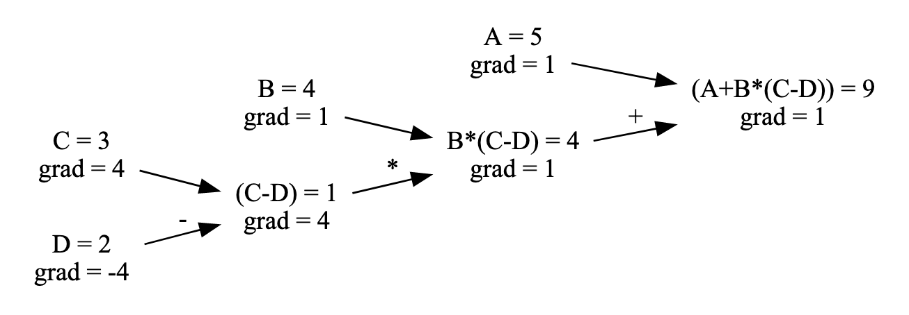

DNN (Deep Neural Networks)#
Gradient Descent#
Before jumping right into neural networks let’s look at a simple idea of how we can perform gradient descent.
%matplotlib inline
import numpy as np
import pandas as pd
import matplotlib.pyplot as plt
from sklearn.datasets import load_iris
from sklearn.decomposition import PCA
Let’s say we have a simple line $y=5x+2$.
X = np.linspace(0, 1, 100)
y = 5 * X + 2
plt.plot(X, y)
plt.show()
So the model will have two coefficients - $k, b$. For sure it’s easy to solve it analytically and it’s an overkill to use gradient descent, but this is just for illustration purposes. The idea is super simple - let’s move into the direction which leads to lower cost (error).

For regression task it is common to use MSE loss $(\hat{y} - y)^2$. It’s derivative is just $2(\hat{y} - y)$, thus we get
k, b = 0, 0 # initial values
epochs = 200
learning_rate = 0.1
L = [] # storage for k and b through training
for i in range(epochs):
pred = k * X + b
# Compute the gradients for k and b
dk = -2 * np.mean(X * (y - pred))
db = -2 * np.mean(y - pred)
# Update k and b using the gradients
k -= learning_rate * dk
b -= learning_rate * db
L.append([k, b])
pd.DataFrame(L, columns=['k', 'b']).plot()
plt.show()
Note, that gradient descent is sensitive to the step size. We will meet some solutions to this problem in the future.

Try to play around with learning rate and see it for yourself.
Also gradient descent is not guaranteed to find global minimum, but when we work with high dimensional data this risk partly wanishes.

You can use the same trick to fit a line over multiple points. Training process should look similar to that:

Timeline#

ANNs have been around for quite a while: they were first introduced back in 1943 by the neurophysiologist Warren McCulloch and the mathematician Walter Pitts (see “A Logical Calculus of Ideas Immanent in Nervous Activity”).


Most of the pictures are taken from the great book “Hands-On Machine Learning with Scikit-Learn, Keras, and TensorFlow, 2nd Edition” by Aurélien Géron.
The Perceptron#
The Perceptron is one of the simplest ANN architectures, invented in 1957 by Frank Rosenblatt. It is based on a slightly different artificial neuron called a threshold logic unit (TLU), or sometimes a linear threshold unit (LTU). A Perceptron is simply composed of a single layer of TLUs, with each TLU connected to all the inputs.


Lets see how is a Perceptron trained.
The Perceptron training algorithm proposed by Rosenblatt was largely inspired by Hebb’s rule. In his 1949 book The Organization of Behavior (Wiley), Donald Hebb suggested that when a biological neuron triggers another neuron often, the connection between these two neurons grows stronger. Siegrid Löwel later summarized Hebb’s idea in the catchy phrase, “Cells that fire together, wire together”; that is, the connection weight between two neurons tends to increase when they fire simultaneously. This rule later became known as Hebb’s rule (or Hebbian learning).

The decision boundary of each output neuron is linear, so Perceptrons are incapable of learning complex patterns (just like Logistic Regression classifiers). However, if the training instances are linearly separable, Rosenblatt demonstrated that this algorithm would converge to a solution. This is called the Perceptron convergence theorem.
Perceptron for 2 class case#
We will produce following perceptron from scratch

but first we need some data first. We will work with iris dataset.
iris = load_iris()
df = pd.DataFrame(iris.data, columns = iris.feature_names)
df['class'] = iris.target_names[iris.target]
We want a way to plot it, but it has 4 dimensions. PCA to the rescue.
pca = PCA(2)
df['pc_1'], df['pc_2'] = pca.fit_transform(df.iloc[:, :4]).T
colors = {'setosa': 'red', 'versicolor': 'green', 'virginica': 'blue'}
fig, ax = plt.subplots(figsize=(8, 6))
for label, c in colors.items():
ax.scatter(x=df[df['class'] == label]['pc_1'],
y=df[df['class'] == label]['pc_2'],
c=c,
label=label)
ax.legend()
plt.show()
We will work only with two class case for now, thus let’s change the labels by leaving one class and treating all other points as a second class.
CLASS = 'setosa'
# Prepare data for 2 class test
y = (df['class'] == CLASS).astype('int').values
X = df.iloc[:, :4]
# Apply standart scaler
X = ((X - X.mean()) / X.std()).values
# Add ones for intercept
X = np.hstack([X, np.ones((X.shape[0], 1))])
# Make mask for tain/test set
np.random.seed(42)
mask = np.random.random(X.shape[0]) < 0.7
N, M = X.shape
Now we are ready to try our Perceptron.
epochs = 100
learning_rate = 0.01
# Initial weights between 0 and 1
np.random.seed(42)
W = np.random.random(M)
for _ in range(epochs):
# Train only on train set
for features, label in zip(X[mask], y[mask]):
pred = 1 if np.dot(features, W) > 0 else 0 # step function
W -= learning_rate * (pred - label) * features
pred_train = np.dot(X[mask], W) > 0
pred_test = np.dot(X[~mask], W) > 0
print('Hit rate (train set) - {0:.02%}, Hit rate (test set) - {1:.02%}'.format(
(pred_train == y[mask]).mean(), (pred_test == y[~mask]).mean()))
Hit rate (train set) - 100.00%, Hit rate (test set) - 100.00%
Well, clearly it’s easy to sepperate setosa from other two classes. Try to change target class to versicolor and virginica.
Power of perceptron formulation#
Perceptron definition is quite flexible and modifying loss and activation allows to replicate some whell known algorithms, see picture taken from “Neural Networks and Deep Learning: A Textbook” (book by Charu C. Aggarwal).

All of this flexibility and initial results led people to believe that AI is just behind the corner. This is clearly seen in movies, books, conferences, papers, etc.

Beginning of first AI winter#
Researchers strongy believed that perceptrons can and will solve hard problems. In 1966 Marvin Minskey together with Seymour Papert as a summer project for his students gave a task to solve computer vision. Task was to split image into regions of likely objects and background areas and perform object classification. It turned out to be much harder than they anticipated. We will soon construct object classifier, if you are interested in background detection read about U-Net.
In their 1969 monograph Perceptrons, Marvin Minsky and Seymour Papert (same guys after 3 years) highlighted a number of serious weaknesses of Perceptrons—in particular, the fact that they are incapable of solving some trivial problems (e.g., the Exclusive OR (XOR) classification problem. It turns out that some of the limitations of Perceptrons can be eliminated by stacking multiple Perceptrons (or using ADA activation)!

But, we have no idea how to train those stacked Perceptorns (DNN - deep neural nets). And also there are no big enough datasets or resources to try this out…

Backpropagation#
When an ANN contains a deep stack of hidden layers, it is called a deep neural network (DNN).

For many years researchers struggled to find a way to train MLPs, without success. But in 1986, David Rumelhart, Geoffrey Hinton, and Ronald Williams published a groundbreaking paper (“Learning Internal Representations by Error Propagation”) that introduced the backpropagation training algorithm, which is still used today.
Actually backpropagation was known prior to 1986 (Paul Werbos, 1975)

In short, it is Gradient Descent using an efficient technique for computing the gradients automatically: in just two passes through the network (one forward, one backward), the backpropagation algorithm is able to compute the gradient of the network’s error with regard to every single model parameter.

Automatically computing gradients is called automatic differentiation, or autodiff. There are various autodiff techniques, with different pros and cons. The one used by backpropagation is called reverse-mode autodiff.
Two layer NN for 2 class case#

sigmoid = lambda x: 1 / (1 + np.exp(-x))
diff = lambda x: x * (1 - x)
hidden = 4
learning_rate = 0.01
epochs = 500
# Initial weights between 0 and 1
np.random.seed(42)
W_0 = np.random.randn(M, hidden)
W_1 = np.random.randn(hidden, 1)
Following code implements back propagation using gradient descent.

Note, that gradient shows how much the result will change if the input is increased by 1 unit, for example:

For extensive chain rule back propagation explanation see this blog post or a great lecture from Andrej Karpathy on building micrograd.
for _ in range(epochs):
# Forward pass (make prediction)
L_1 = sigmoid(X[mask].dot(W_0))
L_2 = sigmoid(L_1.dot(W_1))
# Backward pass (propagate diff)
diff_2 = (y[mask, np.newaxis] - L_2) * diff(L_2)
diff_1 = np.dot(diff_2, W_1.T) * diff(L_1)
W_1 += learning_rate * np.dot(L_1.T, diff_2)
W_0 += learning_rate * np.dot(X[mask].T, diff_1)
pred_train = (sigmoid(sigmoid(X[mask].dot(W_0)).dot(W_1)) > 0.5).flatten()
pred_test = (sigmoid(sigmoid(X[~mask].dot(W_0)).dot(W_1)) > 0.5).flatten()
print('Hit rate (train set) - {0:.02%}, Hit rate (test set) - {1:.02%}'.format(
(pred_train == y[mask]).mean(), (pred_test == y[~mask]).mean()))
Hit rate (train set) - 100.00%, Hit rate (test set) - 100.00%
TASK: Change the class from CLASS = 'setosa' and see if non-linearity works. Play with this visualization - https://www.geogebra.org/m/a5x9szmc to get a sense why. Finally go to TensorFlow Playground to get even more intuition on how this works on blobs, rings, spirals, etc.
MNIST (Application of backprop by Yann LeCun, 1989)#


from torchvision import datasets
train_dataset = datasets.MNIST(root='./data', train=True, download=True)
test_dataset = datasets.MNIST(root='./data', train=False, download=True)
X_train = train_dataset.data.numpy()
y_train = train_dataset.targets.numpy()
X_test = test_dataset.data.numpy()
y_test = test_dataset.targets.numpy()
# Normalize
X_train = X_train / 255
X_test = X_test / 255
plt.figure(figsize=(10, 3))
for i in range(30):
plt.subplot(3, 10, i + 1)
plt.imshow(X_train[i], cmap='gray')
plt.axis('off')
plt.show()
Before jumping to PyTorch let’s see of how this would look like if we try to build it from scratch.
The idea lies on:
softmax
cross-entropy loss
We will work out details in the lecture, but our NN ends up to be quite simple. We need to flatten data first.
X_train_flat = X_train.reshape((X_train.shape[0], 28*28))
X_test_flat = X_test.reshape((X_test.shape[0], 28*28))
y_train_one_hot = np.eye(10)[y_train]
y_test_one_hot = np.eye(10)[y_test]
And then just train using gradient descent and backprop rule.
%%time
sigmoid = lambda x: 1 / (1 + np.exp(-x))
diff = lambda x: x * (1 - x)
def softmax(z):
z_exp = np.exp(z - z.max(axis=1, keepdims=True))
return z_exp / z_exp.sum(axis=1, keepdims=True)
hidden = 50
learning_rate = 0.01
batch_size = 100
epochs = 20
# Initial weights between 0 and 1
np.random.seed(42)
W_0 = np.random.uniform(size=(28*28, hidden), low=-1, high=1)
W_1 = np.random.uniform(size=(hidden, 10), low=-1, high=1)
for e in range(epochs):
print(f'Running epoch {e}')
for i in range(0, len(X_train), batch_size):
X = X_train_flat[i:i+batch_size]
y = y_train_one_hot[i:i+batch_size]
# Forward pass (make prediction)
L_1 = sigmoid(X.dot(W_0))
L_2 = softmax(L_1.dot(W_1))
# Backward pass (propagate diff)
diff_2 = L_2 - y
diff_1 = np.dot(diff_2, W_1.T) * diff(L_1)
W_1 -= learning_rate * np.dot(L_1.T, diff_2)
W_0 -= learning_rate * np.dot(X.T, diff_1)
pred_train = sigmoid(sigmoid(X_train_flat.dot(W_0)).dot(W_1)).argmax(axis=1)
pred_test = sigmoid(sigmoid(X_test_flat.dot(W_0)).dot(W_1)).argmax(axis=1)
print('Hit rate (train set) - {0:.02%}, Hit rate (test set) - {1:.02%}'.format(
(pred_train == y_train).mean(), (pred_test == y_test).mean()))
Running epoch 0
Hit rate (train set) - 90.83%, Hit rate (test set) - 90.95%
Running epoch 1
Hit rate (train set) - 93.02%, Hit rate (test set) - 92.66%
Running epoch 2
Hit rate (train set) - 94.15%, Hit rate (test set) - 93.57%
Running epoch 3
Hit rate (train set) - 94.80%, Hit rate (test set) - 94.14%
Running epoch 4
Hit rate (train set) - 95.28%, Hit rate (test set) - 94.51%
Running epoch 5
Hit rate (train set) - 95.68%, Hit rate (test set) - 94.75%
Running epoch 6
Hit rate (train set) - 96.02%, Hit rate (test set) - 95.00%
Running epoch 7
Hit rate (train set) - 96.31%, Hit rate (test set) - 95.26%
Running epoch 8
Hit rate (train set) - 96.55%, Hit rate (test set) - 95.34%
Running epoch 9
Hit rate (train set) - 96.74%, Hit rate (test set) - 95.43%
Running epoch 10
Hit rate (train set) - 96.90%, Hit rate (test set) - 95.54%
Running epoch 11
Hit rate (train set) - 97.02%, Hit rate (test set) - 95.63%
Running epoch 12
Hit rate (train set) - 97.19%, Hit rate (test set) - 95.72%
Running epoch 13
Hit rate (train set) - 97.33%, Hit rate (test set) - 95.75%
Running epoch 14
Hit rate (train set) - 97.40%, Hit rate (test set) - 95.76%
Running epoch 15
Hit rate (train set) - 97.51%, Hit rate (test set) - 95.79%
Running epoch 16
Hit rate (train set) - 97.63%, Hit rate (test set) - 95.88%
Running epoch 17
Hit rate (train set) - 97.73%, Hit rate (test set) - 96.00%
Running epoch 18
Hit rate (train set) - 97.82%, Hit rate (test set) - 96.00%
Running epoch 19
Hit rate (train set) - 97.94%, Hit rate (test set) - 96.02%
CPU times: user 1min 50s, sys: 6.18 s, total: 1min 56s
Wall time: 16 s
Can we make it faster using PyTorch?
import torch
import time
def benchmark(device, n=1000):
"""
Perform matrix multiplication on the given device.
Args:
- device (str): 'cuda' or 'cpu'
- n (int): Size of the matrix (n x n)
Returns:
- float: Elapsed time in seconds for the operation
"""
# Create two random matrices
a = torch.rand(n, n, device=device)
b = torch.rand(n, n, device=device)
# Warm up (ensure any startup overhead is handled)
for _ in range(10):
_ = torch.mm(a, b)
# Measure the time it takes to perform the matrix multiplication
start_time = time.time()
for _ in range(100):
_ = torch.mm(a, b)
end_time = time.time()
return end_time - start_time
if torch.cuda.is_available():
gpu_time = benchmark('cuda')
print(f"Matrix multiplication on GPU took {gpu_time:.4f} seconds.")
else:
print("CUDA is not available.")
if torch.backends.mps.is_available():
gpu_time = benchmark('mps')
print(f"Matrix multiplication on GPU took {gpu_time:.4f} seconds.")
else:
print("MPS is not available.")
cpu_time = benchmark('cpu')
print(f"Matrix multiplication on CPU took {cpu_time:.4f} seconds.")
CUDA is not available.
Matrix multiplication on GPU took 0.0063 seconds.
Matrix multiplication on CPU took 0.1998 seconds.
Let’s move from numpy to PyTorch.
# Assuming train_dataset and test_dataset are PyTorch Datasets
X_train = train_dataset.data.float() / 255
y_train = train_dataset.targets
X_test = test_dataset.data.float() / 255
y_test = test_dataset.targets
# Flatten the images
X_train_flat = X_train.view(X_train.shape[0], -1)
X_test_flat = X_test.view(X_test.shape[0], -1)
# One-hot encoding of labels
y_train_one_hot = torch.nn.functional.one_hot(y_train, num_classes=10).float()
y_test_one_hot = torch.nn.functional.one_hot(y_test, num_classes=10).float()
%%time
# Define sigmoid and its derivative
sigmoid = lambda x: 1 / (1 + torch.exp(-x))
diff = lambda x: x * (1 - x)
def softmax(z):
z_exp = torch.exp(z - z.max(dim=1, keepdim=True).values)
return z_exp / z_exp.sum(dim=1, keepdim=True)
hidden = 50
learning_rate = 0.01
batch_size = 100
epochs = 20
# Make sure your GPU is available, otherwise fall back to CPU
device = torch.device("cuda" if torch.cuda.is_available() else "cpu")
# Initial weights
torch.manual_seed(42)
W_0 = torch.rand(28*28, hidden, device=device, dtype=torch.float32) * 2 - 1
W_1 = torch.rand(hidden, 10, device=device, dtype=torch.float32) * 2 - 1
X_train_flat, y_train_one_hot = X_train_flat.to(device), y_train_one_hot.to(device)
X_test_flat, y_test_one_hot = X_test_flat.to(device), y_test_one_hot.to(device)
for e in range(epochs):
print(f'Running epoch {e}')
for i in range(0, X_train_flat.size(0), batch_size):
X = X_train_flat[i:i+batch_size]
y = y_train_one_hot[i:i+batch_size]
# Forward pass
L_1 = sigmoid(torch.mm(X, W_0))
L_2 = softmax(torch.mm(L_1, W_1))
# Backward pass
diff_2 = L_2 - y
diff_1 = torch.mm(diff_2, W_1.t()) * diff(L_1)
W_1 -= learning_rate * torch.mm(L_1.t(), diff_2)
W_0 -= learning_rate * torch.mm(X.t(), diff_1)
with torch.no_grad():
pred_train = sigmoid(torch.mm(sigmoid(torch.mm(X_train_flat, W_0)), W_1)).argmax(dim=1).cpu().numpy()
pred_test = sigmoid(torch.mm(sigmoid(torch.mm(X_test_flat, W_0)), W_1)).argmax(dim=1).cpu().numpy()
print('Hit rate (train set) - {0:.02%}, Hit rate (test set) - {1:.02%}'.format(
(pred_train == y_train.numpy()).mean(), (pred_test == y_test.numpy()).mean()))
Running epoch 0
Hit rate (train set) - 90.22%, Hit rate (test set) - 90.11%
Running epoch 1
Hit rate (train set) - 92.62%, Hit rate (test set) - 92.19%
Running epoch 2
Hit rate (train set) - 93.86%, Hit rate (test set) - 92.99%
Running epoch 3
Hit rate (train set) - 94.64%, Hit rate (test set) - 93.75%
Running epoch 4
Hit rate (train set) - 95.23%, Hit rate (test set) - 94.06%
Running epoch 5
Hit rate (train set) - 95.68%, Hit rate (test set) - 94.44%
Running epoch 6
Hit rate (train set) - 96.06%, Hit rate (test set) - 94.80%
Running epoch 7
Hit rate (train set) - 96.35%, Hit rate (test set) - 95.06%
Running epoch 8
Hit rate (train set) - 96.55%, Hit rate (test set) - 95.29%
Running epoch 9
Hit rate (train set) - 96.75%, Hit rate (test set) - 95.41%
Running epoch 10
Hit rate (train set) - 96.94%, Hit rate (test set) - 95.53%
Running epoch 11
Hit rate (train set) - 97.09%, Hit rate (test set) - 95.66%
Running epoch 12
Hit rate (train set) - 97.22%, Hit rate (test set) - 95.68%
Running epoch 13
Hit rate (train set) - 97.36%, Hit rate (test set) - 95.74%
Running epoch 14
Hit rate (train set) - 97.47%, Hit rate (test set) - 95.81%
Running epoch 15
Hit rate (train set) - 97.59%, Hit rate (test set) - 95.85%
Running epoch 16
Hit rate (train set) - 97.72%, Hit rate (test set) - 95.93%
Running epoch 17
Hit rate (train set) - 97.81%, Hit rate (test set) - 95.96%
Running epoch 18
Hit rate (train set) - 97.91%, Hit rate (test set) - 95.95%
Running epoch 19
Hit rate (train set) - 98.01%, Hit rate (test set) - 95.97%
CPU times: user 3.24 s, sys: 933 ms, total: 4.17 s
Wall time: 2.85 s
PyTorch all the way#
From now on we will use PyTorch to create our models. It will take care of backprop and differentiation, thus we only need to define the NN architecture!
import torch
import torch.nn as nn
import torch.nn.functional as F
import torch.optim as optim
class Net(nn.Module):
def __init__(self):
super(Net, self).__init__()
self.flatten = nn.Flatten()
self.fc1 = nn.Linear(28 * 28, 64)
self.fc2 = nn.Linear(64, 32)
self.fc3 = nn.Linear(32, 10)
def forward(self, x):
x = self.flatten(x)
x = F.relu(self.fc1(x))
x = F.relu(self.fc2(x))
x = self.fc3(x)
return x
train_dataset = torch.utils.data.TensorDataset(torch.tensor(X_train, dtype=torch.float32),
torch.tensor(y_train, dtype=torch.int64))
train_loader = torch.utils.data.DataLoader(train_dataset, batch_size=256, shuffle=True)
test_dataset = torch.utils.data.TensorDataset(torch.tensor(X_test, dtype=torch.float32),
torch.tensor(y_test, dtype=torch.int64))
test_loader = torch.utils.data.DataLoader(test_dataset, batch_size=256)
/var/folders/71/2t6j6ytn1t3dfp5dxb9zhh6w0000gn/T/ipykernel_9389/2847555845.py:1: UserWarning: To copy construct from a tensor, it is recommended to use sourceTensor.clone().detach() or sourceTensor.clone().detach().requires_grad_(True), rather than torch.tensor(sourceTensor).
train_dataset = torch.utils.data.TensorDataset(torch.tensor(X_train, dtype=torch.float32),
/var/folders/71/2t6j6ytn1t3dfp5dxb9zhh6w0000gn/T/ipykernel_9389/2847555845.py:2: UserWarning: To copy construct from a tensor, it is recommended to use sourceTensor.clone().detach() or sourceTensor.clone().detach().requires_grad_(True), rather than torch.tensor(sourceTensor).
torch.tensor(y_train, dtype=torch.int64))
/var/folders/71/2t6j6ytn1t3dfp5dxb9zhh6w0000gn/T/ipykernel_9389/2847555845.py:4: UserWarning: To copy construct from a tensor, it is recommended to use sourceTensor.clone().detach() or sourceTensor.clone().detach().requires_grad_(True), rather than torch.tensor(sourceTensor).
test_dataset = torch.utils.data.TensorDataset(torch.tensor(X_test, dtype=torch.float32),
/var/folders/71/2t6j6ytn1t3dfp5dxb9zhh6w0000gn/T/ipykernel_9389/2847555845.py:5: UserWarning: To copy construct from a tensor, it is recommended to use sourceTensor.clone().detach() or sourceTensor.clone().detach().requires_grad_(True), rather than torch.tensor(sourceTensor).
torch.tensor(y_test, dtype=torch.int64))
epochs = 20
model = Net()
criterion = nn.CrossEntropyLoss()
optimizer = optim.SGD(model.parameters(), lr=0.02)
for epoch in range(epochs):
running_loss = 0.0
for images, labels in train_loader:
images = images.view(-1, 28*28)
# Forward pass
outputs = model(images)
loss = criterion(outputs, labels)
running_loss += loss.item()
# Backward pass and optimization
optimizer.zero_grad()
loss.backward()
optimizer.step()
avg_epoch_loss = running_loss / len(train_loader)
print(f'Epoch {epoch} loss {avg_epoch_loss:.04f}')
Epoch 0 loss 2.1960
Epoch 1 loss 1.3783
Epoch 2 loss 0.6811
Epoch 3 loss 0.5033
Epoch 4 loss 0.4295
Epoch 5 loss 0.3898
Epoch 6 loss 0.3658
Epoch 7 loss 0.3479
Epoch 8 loss 0.3339
Epoch 9 loss 0.3225
Epoch 10 loss 0.3124
Epoch 11 loss 0.3024
Epoch 12 loss 0.2933
Epoch 13 loss 0.2848
Epoch 14 loss 0.2772
Epoch 15 loss 0.2702
Epoch 16 loss 0.2630
Epoch 17 loss 0.2564
Epoch 18 loss 0.2497
Epoch 19 loss 0.2437
Structurally this is the same network we had before, thus our error rate is expected to be simmilar.
model.eval()
P = []
with torch.no_grad():
for tag, loader in [('train', train_loader),
('test', test_loader)]:
correct, total = 0, 0
for images, labels in loader:
images = images.view(-1, 28*28)
outputs = model(images)
_, predicted = torch.max(outputs.data, 1)
if tag == 'test':
P.append(predicted)
total += labels.size(0)
correct += (predicted == labels).sum().item()
hit_rate = correct / total
print(f'Hit rate {tag} - {hit_rate:.02%}')
Hit rate train - 93.17%
Hit rate test - 93.14%
Let’s explore some predictions.
pred = np.concatenate(P)
plt.figure(figsize=(10, 10))
for label in range(10):
for i in range(10):
plt.subplot(10, 10, label * 10 + i + 1)
plt.imshow(X_test[pred == label][i], cmap='gray')
plt.axis('off')
plt.show()
Let’s look only at misclassifiesd cases.
plt.figure(figsize=(10, 10))
for label in range(10):
for i in range(10):
plt.subplot(10, 10, label * 10 + i + 1)
mask = (pred == i) & (y_test.numpy() == label)
if mask.sum() > 0:
plt.imshow(X_test[mask][0], cmap='gray')
plt.axis('off')
plt.show()
As you might remember Random Forest achieved similar accuracy so why do we need NN then? Well, let’s try to increse number of parameters in our network.
class Net(nn.Module):
def __init__(self):
super(Net, self).__init__()
self.flatten = nn.Flatten()
self.fc1 = nn.Linear(28 * 28, 1024)
self.fc2 = nn.Linear(1024, 512)
self.fc3 = nn.Linear(512, 256)
self.fc4 = nn.Linear(256, 10)
def forward(self, x):
x = self.flatten(x)
x = F.relu(self.fc1(x))
x = F.relu(self.fc2(x))
x = F.relu(self.fc3(x))
x = self.fc4(x)
return x
epochs = 20
device = 'mps' # Make sure to replace 'mps' with 'cuda' if using NVIDIA GPUs or 'cpu' if you don't have access to GPU.
model = Net().to(device)
criterion = nn.CrossEntropyLoss()
optimizer = optim.SGD(model.parameters(), lr=0.02)
for epoch in range(epochs):
model.train() # Set the model to training mode
running_loss = 0.0
correct_predictions = 0
total_predictions = 0
for images, labels in train_loader:
images = images.view(-1, 28*28).to(device)
labels = labels.to(device)
# Forward pass
outputs = model(images)
loss = criterion(outputs, labels)
running_loss += loss.item()
# Calculate accuracy
_, predicted = torch.max(outputs.data, 1)
total_predictions += labels.size(0)
correct_predictions += (predicted == labels).sum().item()
# Backward pass and optimization
optimizer.zero_grad()
loss.backward()
optimizer.step()
avg_epoch_loss = running_loss / len(train_loader)
training_accuracy = correct_predictions / total_predictions * 100
print(f'Epoch {epoch}, Loss: {avg_epoch_loss:.04f}, Training Accuracy: {training_accuracy:.02f}%')
# Validation phase
model.eval() # Set the model to evaluation mode
val_running_loss = 0.0
val_correct_predictions = 0
val_total_predictions = 0
with torch.no_grad():
for images, labels in test_loader:
images = images.view(-1, 28*28).to(device)
labels = labels.to(device)
outputs = model(images)
loss = criterion(outputs, labels)
val_running_loss += loss.item()
_, predicted = torch.max(outputs.data, 1)
val_total_predictions += labels.size(0)
val_correct_predictions += (predicted == labels).sum().item()
avg_val_loss = val_running_loss / len(test_loader)
validation_accuracy = val_correct_predictions / val_total_predictions * 100
print(f'Validation Loss: {avg_val_loss:.04f}, Validation Accuracy: {validation_accuracy:.02f}%\n')
Epoch 0, Loss: 2.2665, Training Accuracy: 38.70%
Validation Loss: 2.2016, Validation Accuracy: 52.47%
Epoch 1, Loss: 1.8765, Training Accuracy: 56.23%
Validation Loss: 1.2636, Validation Accuracy: 65.01%
Epoch 2, Loss: 0.8719, Training Accuracy: 76.84%
Validation Loss: 0.6187, Validation Accuracy: 82.97%
Epoch 3, Loss: 0.5359, Training Accuracy: 84.89%
Validation Loss: 0.4537, Validation Accuracy: 87.27%
Epoch 4, Loss: 0.4271, Training Accuracy: 87.91%
Validation Loss: 0.3802, Validation Accuracy: 89.18%
Epoch 5, Loss: 0.3751, Training Accuracy: 89.29%
Validation Loss: 0.3450, Validation Accuracy: 89.90%
Epoch 6, Loss: 0.3432, Training Accuracy: 90.20%
Validation Loss: 0.3222, Validation Accuracy: 90.65%
Epoch 7, Loss: 0.3197, Training Accuracy: 90.84%
Validation Loss: 0.3034, Validation Accuracy: 91.02%
Epoch 8, Loss: 0.2995, Training Accuracy: 91.48%
Validation Loss: 0.2808, Validation Accuracy: 91.72%
Epoch 9, Loss: 0.2825, Training Accuracy: 91.93%
Validation Loss: 0.2678, Validation Accuracy: 92.01%
Epoch 10, Loss: 0.2679, Training Accuracy: 92.34%
Validation Loss: 0.2503, Validation Accuracy: 92.79%
Epoch 11, Loss: 0.2525, Training Accuracy: 92.76%
Validation Loss: 0.2387, Validation Accuracy: 93.02%
Epoch 12, Loss: 0.2399, Training Accuracy: 93.11%
Validation Loss: 0.2310, Validation Accuracy: 93.35%
Epoch 13, Loss: 0.2274, Training Accuracy: 93.48%
Validation Loss: 0.2199, Validation Accuracy: 93.79%
Epoch 14, Loss: 0.2155, Training Accuracy: 93.92%
Validation Loss: 0.2120, Validation Accuracy: 93.92%
Epoch 15, Loss: 0.2057, Training Accuracy: 94.13%
Validation Loss: 0.2033, Validation Accuracy: 93.94%
Epoch 16, Loss: 0.1952, Training Accuracy: 94.48%
Validation Loss: 0.1895, Validation Accuracy: 94.52%
Epoch 17, Loss: 0.1866, Training Accuracy: 94.69%
Validation Loss: 0.1796, Validation Accuracy: 94.81%
Epoch 18, Loss: 0.1780, Training Accuracy: 94.97%
Validation Loss: 0.1750, Validation Accuracy: 94.93%
Epoch 19, Loss: 0.1700, Training Accuracy: 95.16%
Validation Loss: 0.1656, Validation Accuracy: 95.09%
Thats better! For examply by using layers 1500, 1000, 500, 10 you can improve accuracy to ~98.24%, but training will take quite some time. Actually you can go even futher with simple data augmentation techniques - https://arxiv.org/pdf/1003.0358.pdf
To the save and load the model you can use:
torch.save(model, 'mnist-model.pth')
# model = torch.load('mnist-model.pth')
Dropout#
There is a nice and popular way to prevent over-fitting in Neural Networks - turn off some neurons during training procudure.

You can try that out by adding Dropout layers between Dense ones as follows:
class Net(nn.Module):
def __init__(self):
super(Net, self).__init__()
self.flatten = nn.Flatten()
self.fc1 = nn.Linear(28 * 28, 1024)
self.dropout1 = nn.Dropout(0.5) # Dropout layer after fc1
self.fc2 = nn.Linear(1024, 512)
self.dropout2 = nn.Dropout(0.5) # Dropout layer after fc2
self.fc3 = nn.Linear(512, 256)
self.dropout3 = nn.Dropout(0.5) # Dropout layer after fc3
self.fc4 = nn.Linear(256, 10)
def forward(self, x):
x = self.flatten(x)
x = F.relu(self.fc1(x))
x = self.dropout1(x)
x = F.relu(self.fc2(x))
x = self.dropout2(x)
x = F.relu(self.fc3(x))
x = self.dropout3(x)
x = self.fc4(x)
return x
Try that out. Note that when you’re using the model for evaluation or inference, you should set it to evaluation mode with model.eval() to make sure the dropout layers are bypassed. When you return to training, use model.train() to activate dropout again.
As we go further we will see that sometime bigger networks simply don’t overfit the data, standard statistics logic starts to break down. This phenomenon is called Deep Double Descent.
Task: approximate interpolation#
To get slightly better feel of what 2-layer NN is capable of, let’s try to implement idea presented in paper entitled “Constructive approximate interpolation by neural networks” by B. Llanas. Let $P = {x_0=a, x_1, \dots, x_n=b}$ be any partition of interval $[a,b]$. Let’s define neural net as:
$$ \begin{align} N_a(x, A) = & \sum_{j=0}^{n-1} (f_j - f_{j+1}) \sigma \left( \frac{-2Ax}{x_{j+1} - x_j} + \frac{x_{j+1} + x_j}{x_{j+1} - x_j} A \right) \ & + f_n \sigma \left( \frac{-2Ax}{x_n - x_{n-1}} + \frac{3 x_n + x_{n-1}}{x_n - x_{n-1}} A \right) \end{align}. $$
Then for interpolation problem $(x_0, f_0), (x_1, f_1), \dots, (x_n, f_n)$ this network yields approximate interpolation and parameter $A > 0$ controls smoothness, lower value will end up in more smooth fit.
TASK: implement this using numpy (or tensorflow) and make some plots to convince yourself that it works.
For test you can use any random function, for example:
x = np.sort(np.random.uniform(size=100))
y = np.sin(2 * np.pi * x) + np.sin(5 * np.pi * x) + x
plt.scatter(x, y)
Tip: Note, that weights in the first line can be stacked with weights listed in the second line before implementing dot product.
Solution (do not scroll down, try to solve it before without help)#
x = np.sort(np.random.uniform(size=100))
y = np.sin(2 * np.pi * x) + np.sin(5 * np.pi * x) + x
plt.scatter(x, y)
A = 2
diff = x[1:] - x[:-1]
weights = np.append(-2 * A / diff, -2 * A / diff[-1])
bias = np.append((x[1:] + x[:-1]) / diff * A, (3 * x[-1] + x[-2]) / diff[-1] * A)
comb_weights = np.append(y[:-1] - y[1:], y[-1])
x_ref = np.linspace(0, 1, 1000)[:, np.newaxis]
y_interp = sigmoid(weights * x_ref + bias).dot(comb_weights)
plt.scatter(x, y)
plt.plot(x_ref, y_interp, c='red')